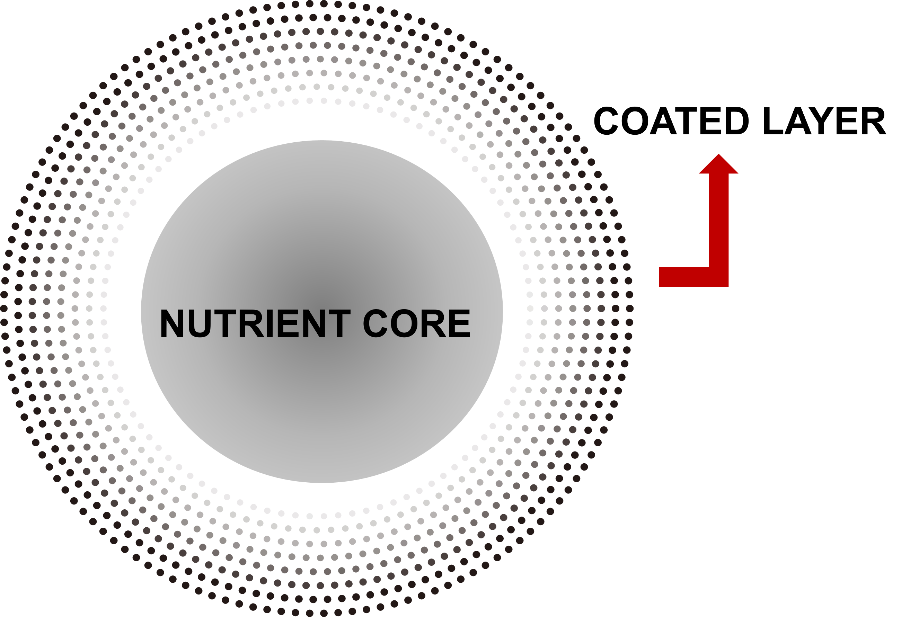
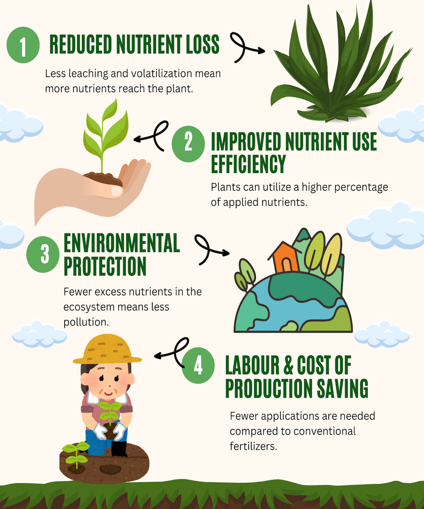

LAMATu, Controlled Release Technology
Fertilizer & Fertilizing products
What is a CRT-Enabler Coating Material?

- The nutrient core is no longer naked! It is enveloped by a coating material.
- The coating material dissociates to release the nutrients.
- Time-controlled release of nutrients offers continuous nutrient supply.
LAMATu Series is a CRT ENABLER
| PRODUCT | LAMAtu by Nanofertech Sdn. Bhd. | Company X | Company Y |
|---|---|---|---|
| Coating material | element | polymer | polymer |
| Dimension | nano | bulk | bulk |
| Coupled to nutrient release predictive tool | yes | no | no |
| Form | granule | granule | sachet |
| Crop range | agricultural crops | oil palm | oil palm and rubber |
| Beneficial functional coat | yes | no | no |
Why switch to CRT-enabled fertilizer?

Why LAMATu is Your Choice of CRT
The LAMATu series offers significant advantages over conventional fertilizers. Its controlled release technology reduces costs, labor, and environmental impact. Here's a comparison of the key factors:
| Factor | Conventional Fertilizer | CRT-Enabled LAMATu |
|---|---|---|
| Fertilizer Price | RM 2.00/kg | RM 5.00/kg |
| Split Applications per Tree/Year | 4X | 1X |
| Input Cost per Tree/Year | 8 * n trees | 5 * n trees |
| Labour | 3X * RM3/h | 1X * RM3/h |
| Labour Cost per Tree/Year | 3 * RM3/h * n trees | 1 * RM3/h * n trees |
Reduces up to 37.5% of input cost and reduces up to 66% of labour cost
- One-time application
- One-time labour
- Lifetime environmental stewardship
LAMATu Environmental Pledge
In Malaysia, the existing CRT technologies are acquired through international patents. LAMATu series of CRT is a homegrown local invention empowering the local agriculture scene with its core value, sustainability.
With a 1% nitrous oxide emission factor from nitrogenous fertilizer, LAMATu is able to reduce up to 75% of GHG emissions resulting from the fertilization of 1 hectare of oil palm plantation, annually.